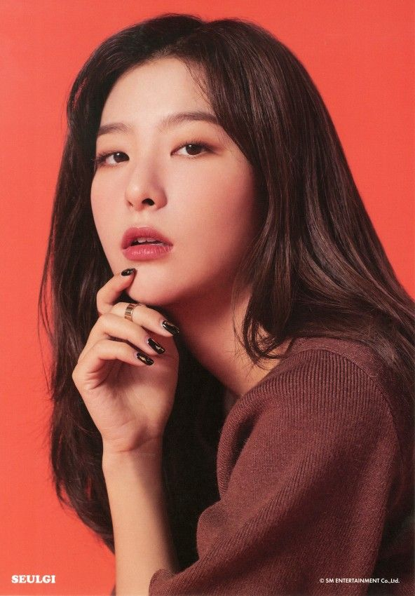
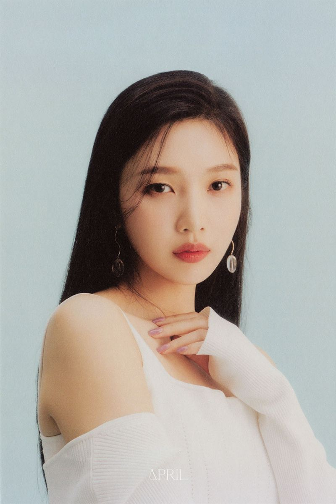
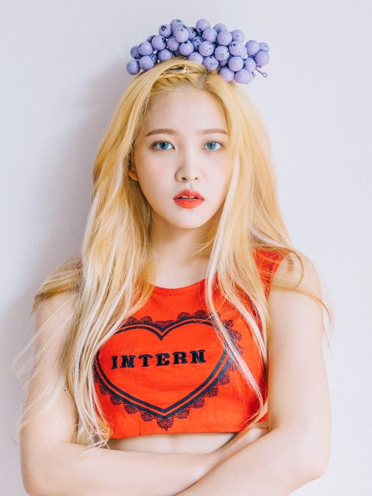

Irene

- Nombre artistico: 아이린 / Irene
- Nombre real: 배주현 / Bae Joo Hyun
- Estatura: 158 cm
- Lugar de nascimiento: Daegu, Corea del Sur.
- Fecha de nascimiento: 29-Marzo-1991 (31 Años)
- Profesión: Rapera, Bailarina, Cantante, Actriz, Modelo y MC.
-
Pre-Debut
En 2009 realizó el casting para SM Entertainment. Fue previamente promovida por la compañía a través de su grupo pre-debut, SMROOKIES, junto con tres miembros de Red Velvet; Seulgi, Wendy y Yeri. Se reveló que Irene pasaría a formar parte del proyecto SMROOKIES el 09 de Diciembre del 2013.
SMTOWN, el canal oficial de YouTube de SM Entertainment, liberó varios clips del grupo, incluyendo un vídeo de Irene y su compañera Seulgi realizando un número de baile titulado 'Be Natural'.
-
Debut
Irene realizó su debut oficial con Red Velvet el 1 de agosto del 2014. Para 2016, Irene realizo su debut como actriz para el wed Drama Game Development Girls.
Seulgi
- Nombre artistico: 슬기 / Seul Gi
- Nombre real: 강슬기 / Kang Seul Gi
- Estatura: 162 cm
- Lugar de nascimiento: Ansan, Gyeonggi-do, Corea del Sur.
- Fecha de nascimiento: 10-Febrero-1994 (28 Años)
- Profesión: Cantante, Bailarina y Modelo.
-
Pre-Debut
Seulgi entró como aprendiz a SM Entertainment en el año 2007 con el sistema de SM Global Audition. Seulgi formó parte del grupo pre-debut de la compañía llamado SMROOKIES, junto a sus compañeras deRed Velvet Irene, Wendy y Yeri.
Ella se postuló oficialmente como parte del proyecto SMROOKIES el 03 de Diciembre del 2013. SM Entertainment en su canal oficial de YouTube lanzó un vídeo en el que Seulgi, junto a Irene, mostró sus habilidades de baile interpretando la canción 'Be Natural'.
En 2014, antes de debutar en Red Velvet, Seulgi colaboró en la canción "Butterfly" de Henry.
-
Debut
Seulgi hizo su debut oficial en Red Velvet el 1 de agosto del 2014.
Wendy
- Nombre artistico: 웬디 / Wendy
- Nombre real: 손승완 / Son Seung Wan
- Estatura: 159 cm
- Lugar de nascimiento: Seongbuk-Dong, Seúl, Corea del Sur
- Fecha de nascimiento: 21-Febrero-1994
- Profesión: Cantante, Bailarina, Modelo y MC
-
Pre-Debut
Wendy era ya conocida por haber sido aprendiz breve mente en Cube Entertainment, a través de una audición mundial en 2011, en la que llegó a estar entre los 14 mejores concursantes. Después de eso, trabajó con el productor canadiense Gentleman Bear entre mediados de 2011 y mediados de 2012, antes de firmar un contrato con su actual discográfica.
Entró como aprendiz de SM Entertainment en el 2012 con el sistema "SM Global Audition" en Canadá.
Fue parte del grupo SMROOKIES, junto con las miembros de Red Velvet Irene, Seulgi y Yeri. Se reveló oficialmente que sería miembro del proyecto SMROOKIES el 15 de marzo del 2014. El canal oficial de YouTube de SM Entertainment lanzó varios vídeos del grupo, incluyendo uno en el que Wendy cantó una cover de la canción "Speak Now" de Taylor Swift.
-
Debut
El 1 de agosto de 2014, Wendy hizo su debut oficial con Red Velvet.
2021: Debut como solistas con su primer mini-álbum "Like Water"
Joyy 조이
- Nombre artistico: 조이 / Joy
- Nombre real: 박수영 / Park Soo Young
- Estatura: 168 cm
- Lugar de nascimiento: Isla Jeju, Corea del Sur
- Fecha de nascimiento: 03-Septiembre-1996
- Profesión: Cantante, Rapera, Actriz, Bailarina, Modelo y MC
-
Actividad
En 2012, Joy audicionó en un casting de la compañía SM Entertainment. Después de haber sido aceptada y tras dos años de entrenamiento, hizo su debut el 1 de Agosto del 2014 como integrante y rapera del grupo femenino Red Velvet con el sencillo Happines.
A mediados del 2015, Joy se unió a la cuarta temporada del reality show de MBC "We Got Married", donde fue emparejada con Sungjae de BTOB. Apodados la pareja Bbyu; por su personalidad dulce lograron convertirse en la pareja favorita de los televidentes mostrando gran apoyo tanto de las fans de Red Velvet como de BtoB. Tras haber logrado una gran popularidad obtuvieron en conjunto el premio "MBC Entertainment Awards" a la Mejor Pareja; a su vez en esa misma ceremonia, Joy recibió Individualmente el premio a la Nueva Estrella. Durante la transmisión del programa y las promociones de Red Velvet, Joy y Sungjae lanzaron el 16 de Abril un dueto titulado "Young Love". La canción logró trazar #1 en las lista de Olleh y Genie, # 2 en Mnet y Bugs y #9 en Naver. Finalmente tras 11 meses Joy y Sungjae hicieron su salida oficial del programa el 7 de Mayo del 2016, convirtiendose en la pareja más joven y en una de las más populares del show
-
2021: Debut como solista con el Álbum especial "Hello"
El 17 mayo KST, se reveló que Joy lanzaría un álbum especial llamado "Hello", el que contendrá seis canciones que son remakes de éxitos lanzados entre las décadas de 1990 y el 2000 junto a la canción principal "Hello", que es un remake de "Hello" de Park Hyekyoung que fue lanzada originalmente en 2003 y es de género rock moderno.
Yeri
- Nombre artistico: 예리 / Yeri
- Nombre real: 김예림 / Kim Ye Rim
- Estatura: 158 cm
- Lugar de nascimiento: Seúl, Corea del Sur
- Fecha de nascimiento: 05-Marzo-1999 (23 Años)
- Profesión: Cantante, Modelo, Rapera, Compositora, MC, Actriz
-
Actividad
Se unió a SM Entertainment después de la audición en la SM Weekly Audition de 2011. En 2014, actuó como una de las próximas integrantes del grupo de trainees, SM Rookies, en SM Town Live World Tour IV. Tuvo una breve aparición en la introducción de la canción debut de Red Velvet, "Happiness", antes de debutar como miembro del grupo en 2015.
Fue presentada como la nueva miembro de Red Velvet el 10 de marzo de 2015, durante las promociones de su primer mini-álbum "Ice Cream Cake". Desde el 9 de mayo de 2015 hasta el 14 de noviembre de 2015, Yeri fue MC Show! Music Core de MBC, junto con Min Ho de SHINee y N de VIXX.